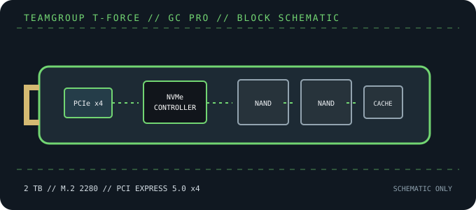

[ PCIE 5.0 NVME DRIVES // IDENTIFIED PRODUCT ]
TEAMGROUP T-FORCE GC PRO 2 TB (TM8FFL002T0C129)
TEAMGROUP’s 2 TB T-FORCE GC PRO is a PCIe 5.0 x4 M.2 2280 NVMe model with InnoGrit IG5666 controller and vendor-rated 12,500/11,000 MB/s sequential performance.

IDENTIFICATION: Confirm the printed model code, capacity, suffix, hardware revision and firmware against the actual drive. Similar family names can denote different heatsinks, controller platforms and performance. Values here identify the cited 2 TB SKU and remain subject to the linked manufacturer documentation.
Manufacturer-identified specifications
| Model / manufacturer code | TEAMGROUP T-FORCE GC PRO 2 TB (TM8FFL002T0C129) — TM8FFL002T0C129 |
|---|---|
| Capacity / physical format | 2 TB; M.2 2280 NVMe SSD |
| Interface / lane width | PCI Express 5.0 x4; backward operation depends on host PCIe/NVMe support. |
| Protocol | NVMe command protocol; exact revision and optional features depend on drive firmware and host support. |
| Vendor-rated sequential performance | Up to 12,500 MB/s read / 11,000 MB/s write; peak ratings, not sustained guarantees. |
| Endurance / warranty | 1,200 TBW; 5-year limited warranty (manufacturer terms apply) |
| Controller / flash | InnoGrit IG5666; 3D TLC NAND. Component details can vary by production revision; use the exact drive label and current manufacturer documentation. |
| Cooling / package note | Check the exact package for its thermal spreader and use the host’s recommended cooling without stacking heatsinks. The controller automatically adapts performance based on its temperature sensor. |
Compatibility, installation & service
- Use an M.2 2280 PCIe/NVMe socket; PCIe Gen5 x4 is required to approach the headline throughput. A compatible older host may operate at the slower negotiated link speed.
- Check whether your retail package includes a thermal spreader and compare it with the motherboard cover. The unit’s temperature-aware behavior does not remove the need for adequate host cooling.
- Consult the motherboard manual for lane sharing, firmware and NVMe boot support; verify the complete TM8FFL002T0C129 code before buying or replacing.
- Before replacing a boot drive, create a recoverable backup and confirm OS recovery media, encryption keys and firmware settings. Follow clean shutdown and electrostatic-discharge precautions; do not hot-plug M.2 unless the platform manual explicitly supports it.
Product references
- TEAMGROUP — T-FORCE GC PRO product specificationsOfficial product identity and feature reference.
- TechPowerUp — TEAMGROUP T-FORCE GC PRO 2 TB reviewIndependent model-specific review and performance testing.
Manufacturer ratings are capacity- and test-condition-specific. Independent tests characterize only the tested sample and workload. Consult current manuals and support portals for revisions, fit, firmware and warranty conditions.